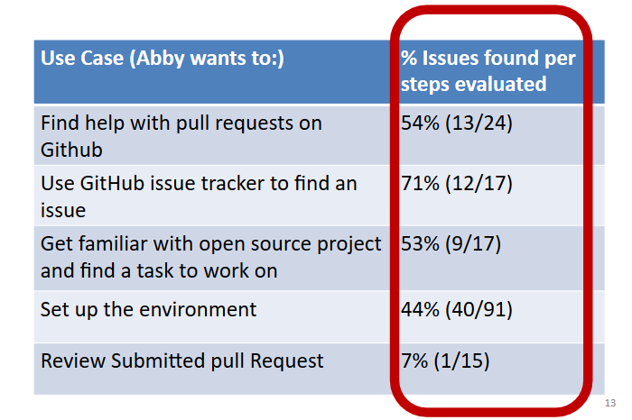

Barriers to entry in Open Source Software
The Purpose
We aimed to find if there were gender biased barriers in Open Source Software (OSS). Our research questions were:
- What kinds of issues can be revealed by looking at OSS through the lens of tools and infrastructure?
- Are tools and infrastructure complicit in causing newcomer barriers? If so, how?
- Are there newcomer barriers to OSS contribution that are gender biased? If there are, in what ways are they biased?
The Quest
We used the GenderMag, short for "Gender Inclusive Magnifier" method to identify gender biases that newcomers to OSS face. GenderMag is a walkthrough-based interface inspection method designed to help software practitioners identify gender-inclusiveness issues in their software. The method has various four personas but we use the Abby persona (i.e. the persona that represents the majority of women's interactions with technology).
Each persona has five facets that the participants of the study use to evaluate the software:

We ran field studies with five teams of software professionals that evaluated a range of use cases on different tools and environments. We audio-video recorded as software professionals used the Abby persona to evaluate their projects for the given use case(s). In the GenderMag method, the participants of the study answer these questions as they perform the cognitive walkthrough:
- SubgoalQ: Will
have formed this subgoal as a step to their overall goal? (Yes/no/maybe, why, what facets did you use) - ActionQ1: Will
know what to do at this step? (Yes/no/maybe, why, what facets did you use) - ActionQ2: If
does the right thing, will s/he know s/he did the right thing and is making progress toward their goal? (Yes/no/maybe, why, what facets did you use).
The Solution
There were many issues in the different uses cases as shown in the table:
{kind=link}
Each issue was either a newcomer barrier or not. If it was identified as newcomer barrier and was also tied to a gender facet then it was a gender biased barrier.

73% of the total newcomer barriers were gender biased (i.e. they were tied to a gender facet).
The Impact
Published in ICSE '18: Proceedings of the 40th International Conference on Software Engineering
Full paper available at: https://doi.org/10.1145/3180155.3180241